건설재료시험기사 (2010-03-07 기출문제)
1과목: 콘크리트공학
1. 시멘트 원료의 조합비를 정하는 데 일반적으로 사용되는 수경률의 계산식으로 옳은 것은?
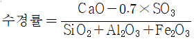
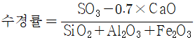
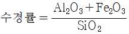
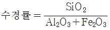
(정답률: 65%)

2. 고압증기양생에 대한 설명으로 틀린 것은?
- 고압증기 양생한 콘크리트는 어느 정도의 취성을 갖는다.
- 고압증기 양생한 콘크리트는 보통양생한 것이 비해 철근의 부착강도가 약 1/2이 되므로 철근콘크리트 부재에 적용하는 것은 바람직하다.
- 고압증기 양생한 콘크리트는 보통양생한 것에 비해 백태현상이 감소된다.
- 고압증기 양생한 콘크리트는 보통양생한 것에 비해 열팽창계수와 탄성계수가 매우 작다.
(정답률: 63%)
3. 서중 콘크리트에 대한 설명으로 틀린 것은?
- 하루의 평균기온이 25℃를 초과하는 것이 예상되는 경우 서중 콘크리트로 시공하여야 한다.
- 콘크리트는 비빈 후 1.5시간 이내에 타설하여야 하며, 지연형 감수제를 사용한 경우라도 2시간 이내에 타설하는 것을 원칙으로 한다.
- 콘크리트 재료의 온도를 낮추어서 사용한다.
- 콘크리트를 타설할 때의 콘크리트 온도는 35℃ 이하이어야 한다.
(정답률: 81%)
4. 압축강도에 의한 콘크리트의 품질관리에서 시험을 위해 시료를 채취하는 시기 및 횟수는 일반적인 경우 하루에 치는 콘크리트 마다 적어도 몇 회로 하여야 하는가?
- 1회
- 2회
- 3회
- 4회
(정답률: 55%)
5. 일반 콘크리트 치기에 대한 설명으로 틀린 것은?
- 타설한 콘크리트를 거푸집 안에서 횡방향으로 이동시켜서는 안된다.
- 한 구획내의 콘크리트 타설이 완료될 때까지 연속해서 타설해야 한다.
- 콘크리트는 그 표면이 한 구획내에서는 거의 수평이 되도록 타설하는 것을 원칙으로 한다.
- 콘크리트 타설 도중 표면에 떠올라 고인 블리딩수가 있을 경우는 콘크리트 표면에 도랑을 만들어 물을 제거 한 후 콘크리트를 타설해야 한다.
(정답률: 88%)
6. 단위 골재량의 절대부피가 800ℓ인 콘크리트에서 잔골재율(S/a)이 40%이고, 굵은 골재의 표건밀도가 2.65g/cm3이면, 단위 굵은 골재량은 얼마인가?
- 848kg
- 1044kg
- 1272kg
- 2120kg
(정답률: 75%)
7. 프리스트레스트 콘크리트에 대한 설명 중 틀린 것은?
- 긴장재에 긴장을 주는 시기에 따라서 포스트텐션방식과 프리텐션방식으로 분류된다.
- 프리텐션방식에 있어서 프리스트레싱할 때의 콘크리트 압축강도는 20MPa 이상이어야 한다.
- 프리스트레싱을 할 때의 콘크리트의 압축강도는 프리스트레스를 준 직후에 콘크리트에 일어나는 최대 압축응력의 1.7배 이상이어야 한다.
- 그라우트 시공은 프리스트레싱이 끝나고 8시간이 경과한 다음 가능한 한 빨리 하여야 한다.
(정답률: 80%)
8. 굳지 않은 콘크리트의 슬럼프(slump) 및 슬럼프시험에 대한 설명으로 옳지 않은 것은?
- 슬럼프콘의 규격은 밑면의 안지름 200mm, 윗면의 안지름은 100mm, 높이는 300mm이다.
- 슬럼프콘에 콘크리트를 채우기 시작하고 나서 슬럼프콘의 들어 올리기를 종료할 때까지의 ㅅ간은 3분 이내로 한다.
- 슬럼프의 표준값은 철근콘크리트에서 일반적인 단면인 경우 40~120mm이다.
- 슬럼프콘을 가만히 연직으로 들어올리고, 콘크리트의 중앙부에서 공시체 높이와의 차를 5mm 단위로 측정하여 이것을 슬럼프 값으로 한다.
(정답률: 57%)
9. 콘크리트의 알칼리 골재반응에 대한 설명으로 틀린 것은?
- 알칼리 골재반응이 진행되면 콘크리트 구조물에 균열리 생긴다.
- 콘크리트 중 알칼리의 주된 공급원은 골재에 부착된 염분(NaCI)이다.
- 알칼리 골재반응은 포졸란의 사용에 의해 억제된다.
- 알칼리 골재반응이 진행되기 위해서는 반응성골재와 알칼리 및 수분이 필요하다.
(정답률: 78%)
10. 콘크리트를 거푸집에 타설한 후부터 응결이 종료할 때까지 발생하는 균열을 초기 균열이라고 한다. 다음 중 초기 균열을 올바르게 묶은 것은?
- 침하 수축 균열-온도 균열
- 침하 수축 균열-플라스틱 수축 균열
- 플라스틱-수축 균열 - 온도 균열
- 플라스틱 수축 균열-건조 수측 균열
(정답률: 86%)
11. 매스콘크리트의 균열 방지 또는 대책에 관한 설명 중 틀린 것은?
- 시멘트는 수화열이 적은 것을 사용한다.
- 소요의 품질을 만족시키는 범위내에서 단위시멘트량이 적어지도록 배합을 선정한다.
- 굵은골재 최대치수는 작은 것을 사용한다.
- 콘크리트의 내부온도 상승이 완만하게 되고, 또 최고온도에 도달한 후에는 매스콘크리트 부재를 보온하여 되도록 장시간에 걸쳐 서서히 냉각시키는 것이 좋다.
(정답률: 59%)
12. 경량 골재 콘크리트에 대한 설명으로 틀린 것은?
- 보통 콘크리트의 응력-변형 관계는 직선적이나, 경량 골재 콘크리트는 곡선적인 변형을 나타낸다.
- 경량 골재 콘크리트의 탄성계수는 보통 콘크리트의 40~70%정도 이다.
- 콘크리트를 제조하기 전에 인공 경량 골재를 충분히 흡수시켜 콘크리트의 비빔시나 운반 도중에 골재의 흡수가 일어나지 않도록 해야 한다.
- 경량 골재 콘크리트의 선팽창률은 일반적으로 보통 콘크리트 60~70% 정도이며 열확산율도 보통 콘크리틍 비하여 낮다.
(정답률: 37%)
13. 콘크리트 압축강도 시험용 공시체를 제작하는 방법에 대한 설명으로 틀린 것은?
- 공시체는 지름의 2배의 높이를 가진 원기둥형으로 한다.
- 콘크리트를 몰드에 채울 때 2층 이상의 거의 같은 층으로 나눠서 채운다.
- 콘크리트를 몰드에 채울 때 다짐봉을 사용하는 경우 각 층을 25회씩 다진다.
- 몰드를 떼는 시기는 콘크리트 채우기가 끝나고 나서 16시간 이상 3일 이내로 한다.
(정답률: 60%)
14. 30회 이상의 시험으로부터 구한 압축강도의 표준편차가 2MPa이고 설계기준 압축강도가 28MPa인 경우 배합강도로 가장 적합한 것은?
- 31MPa
- 30MPa
- 29MPa
- 28MPa
(정답률: 69%)
15. 일반콘크리트 비비기로부터 타설이 끝날 때까지의 시간 한도를 옳게 설명한 것은?
- 외기온도가 25℃이상일 때에는 120분이내, 외기온도가 25℃미만일 때에는 150분이내
- 외기온도에 상관없이 90분이내
- 외기온도가 25℃이상일 때에는 90분이내, 외기온도가 25℃미만일 때에는 120분 이내
- 외기온도에 상관없이 120이내
(정답률: 85%)
16. 하루 평균기온이 4℃ 이하인 기상조건하에서 콘크리트를 타설하고자 할 때 틀린 조치사항은?
- AE제 또는 AE감수제를 사용하여 배합하였다.
- 소요 압축강도가 얻어질 때까지 콘크리트의 온도를 5℃ 이상으로 유지하였다.
- 포틀랜드시멘트를 직접 가열하여 온도를 상승시킨 후 배합하였다.
- 타설할 때의 콘크리트 온도를 15℃정도로 하였다.
(정답률: 82%)
17. 프리스트레스트 콘크리트(PSC)를 철근콘크리트(RC)와 비교할 때 사용재료와 역학적 성질의 특징에 대한 설명으로 틀린 것은?
- 부재 전단면의 유효한 이용
- 부재의 탄성과 복원성이 뛰어남
- 긴장재로 인한 자중과 전단력의 증가
- 고강고 콘크리트와 고강도 감재의 사용
(정답률: 75%)
18. 콘크리트의 건조수축량에 관한 다음 설명 중 옳은 것은?
- 단위 굵은골재량이 많을수록 건조수축량은 크다.
- 분말도가 큰 시멘트일수록 건조수축량은 크다.
- 습도가 낮을수록 온도가 높을수록 건조수축량은 작다.
- 물-시멘트비가 동일할 경우 단위수량의 차이에 따른 건 조수축량이 달라지지는 않는다.
(정답률: 64%)
19. 시방배합을 통해 단위수량 174kg/m3, 시멘트량 369kg/m3, 잔골재 702kg/m3, 굵은골재 1,049kg/m3을 산출하였다. 현장골재의 입도를 고려하여 현장배합으로 수정한다면 잔골대와 굵은골재의 양은 각각 얼마가 되겠는가? (단, 현장골재의 입도는 잔골재 중 5mm체에 남는 양이 10%이고, 굵은골재 중 5mm체를 통과한 양이 5%이다.)
- 잔골재 : 563kg/m3, 굵은골재 : 1,188kg/m3
- 잔골재 : 637kg/m3, 굵은골재 : 1,114kg/m3
- 잔골재 : 723kg/m3, 굵은골재 : 1,028kg/m3
- 잔골재 : 802kg/m3, 굵은골재 : 949kg/m3
(정답률: 75%)
20. 거푸집의 높이가 높아 재료 분리를 방지하기 위하여 연직슈트를 사용하고자 한다. 이 때 슈트의 배출구와 타설면까지의 높이는 원칙적으로 몇 m 이하로 하여야 하는가?
- 1m
- 1.5m
- 2m
- 2.5m
(정답률: 88%)
2과목: 건설시공 및 관리
21. 벤토나이트 공법을 써서 굴착벽면의 붕괴를 막으면서 굴착된 구멍에 철근 콘크리트를 넣어 말뚝이나 벽체를 연속적으로 만드는 공법은?
- Slurry Walll 공법
- Earth Drill 공법
- Earth Anchor 공법
- Open Cut 공법
(정답률: 87%)
22. 100,000m3의 성토공사를 위하여 L=1.25, C=0.9인 현장 흙을 굴착 운반하고자 한다. 운반 토량은?
- 138,888.9m3
- 112,500m3
- 111,111.1m3
- 88.888.9m3
(정답률: 77%)
23. 투수성이 큰 모래를 특수섬유질의 망대속에 투입하여 연약지반내 모래기둥을 형성한 루 간극수를 탈수시켜 연약지반을 개량하는 공법으로 동시에 4공 정도의 모래기둥시공이 가능한 공법은?
- 샌드콤팩션파일 공법
- 샌드드레인 공법
- 섬유드레인 공법
- 팩드레인 공법
(정답률: 43%)
24. 준설능력이 크고 대규모 공사에 적합하여 비교적 넓은 면적의 토질순설에 알맞은 선(船)형에 따라 경질토 준설도 가능한 준설선은?(오류 신고가 접수된 문제입니다. 반드시 정답과 해설을 확인하시기 바랍니다.)
- 그래브준설선
- 디퍼준설선
- 버켓준설선
- 펌프준설선
(정답률: 24%)
25. 정수의 값이 3, 동결지수가 400℃ㆍday일 때, 데라다공식을 이용하여 동결깊이를 구하면?
- 30cm
- 40cm
- 50cm
- 60cm
(정답률: 75%)
26. 네트워크 공정표의 장점에 대한 설명으로 틀린 것은?
- 중점관리가 용이하다.
- 전체와 부분의 관련을 이해하기 쉽다.
- 기자재, 노우 등 배치인원 계획이 합리적으로 이루어진다.
- 작성 및 수정이 쉽다.
(정답률: 82%)
27. 교량구조 중 좌우의 주형을 연결하여 구조물의 횡방향지지 및 강성을 확보, 횡하중의 받침부로 원활한 하중전달을 하기 위해 설치된 구조는 무엇인가?
- 바닥툴
- 교대
- 브레이싱
- 구체
(정답률: 82%)
28. 불투수층에서 최소 침강 지하수면까지의 거리를 1m, 암거의 간격 10m, 투수계수 K=10-5 cm/sec라 할 때 이 암거의 단위 길이당 배수량을 Donnan식에 의하여 구하면 얼마인가?
- 2×10-2cm3/cm/sec
- 2×10-4cm3/cm/sec
- 4×10-2cm3/cm/sec
- 4×10-4cm3/cm/sec
(정답률: 62%)
29. 현장에서 하는 타설 피어공법 중에서 콘크리트 타설 후 Cassing tube의 인발시 철근이 다라 뽑히는 현상이 발생하기 쉬운 공법은?
- reverse circulation drill 공법
- earth drill 공법
- benoto 공법
- gow 공법
(정답률: 82%)
30. 지하철 건설시 이용되는 공법중의 하나가 개칙공법(open cut)이다. 다음 중 개착공법이 아닌 것은?
- trench cut 공법
- earth anchor 공법
- island 공법
- pneumatic caisson 공법
(정답률: 42%)
31. 포장 콘크리트 시공에서 인력포설 및 다짐에 대한 설명으로 틀린 것은?
- 이음의 위치는 포장면 외측에 미리 표시해 두고, 콘크리트 깔기를 중단해야 할 경우에는 이음위치에서 최소한 500mm 이상 깔기를 하여 시공이음으로 자르고 다짐 후 마무리를 해야 한다.
- 다짐은 내부진동기를 사용하는 것을 원칙으로 하며, 이때 내부진동기는 30초~1분간의 정상 다짐 동안에 혼합물을 충분히 다ㅑ질 수 있는 진동횟수를 갖는 것이어야 한다.
- 다질 수 있는 1층 두께는 350mm이하이며, 혼합물의 다짐은 포설 후 1시간 이내에 완료하여야 한다.
- 콘크리트는 재료 분리가 일어나지 않도록 깔고 충분한 다짐도가 얻어질 때까지 다짐을 하여야 한다.
(정답률: 52%)
32. 착암기로 사암을 착공하는 속도를 0.3/min이라 할 때 2m깊이의 구멍을 10개 뚫는데 걸리는 시간은? (단, 착암기 1대를 사용하는 경우)
- 20분
- 220분
- 66.6분
- 666분
(정답률: 57%)
33. 20000m3의 본바닥을 버킷용량 0.6m3의 백호를 이용하여 굴착할 때 아래 조건에 의한 공기를 구하면?
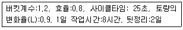
- 24일
- 42일
- 314일
- 186일
(정답률: 59%)
34. 토취장의 조건으로 적당하지 않은 것은?
- 토질이양호해야 한다.
- 용지매수가 쉽고 보상비가 적어야 한다.
- 토량이 충분하고 기계의 사용이 용이해야 한다.
- 토성토량을 행해서 오르막비탈 1/5~1/10정도이어야 한다.
(정답률: 79%)
35. 항만공사에서 간만의 차가 큰 장소에 축조되는 항은?
- 하구항(coastal harbor)
- 개구항(open harbor)
- 폐구항(closed harbor)
- 피난항(refuge harbor)
(정답률: 80%)
36. 폭우시 옹벽 배면에 배수시설이 취약하면 옹벽저면을 통하여 침투수의 수위가 올라간다. 이 침투수가 옹벽에 미치는 영향을 설명한 것 중 옳지 않은 것은?
- 활동면에서의 간극수압 증가
- 부분포화에 따른 뒷채움 흙무게의 증가
- 옹벽 바닥면에서의 양압력 증가
- 수평저항력의 증가
(정답률: 88%)
37. 공정관리도를 작성할 때 사용하는 더미(dummy)에 대한 설명으로 옳은 것은?
- 시간은 필요 없으나 지원은 필요한 활동이다.
- 자원은 필요 없으나 시간은 필요한 활동이다.
- 자원과 시간이 모두 필요한 활동이다.
- 자원과 시간이 필요 없는 명목상의 활동이다.
(정답률: 80%)
38. TBM(Tunnel Boring Machine)에 의한 굴착의 특징이 아닌 것은?
- 안정성(安定性)이 높다.
- 여굴에 의한 낭비가 적다.
- 노무비 절약이 가능하다.
- 복잡한 지질의 변화에 대응이 용이하다.
(정답률: 74%)
39. 정성토에서 발생하는 히빙의 방지대책으로 틀린 것은?
- 널말뚝의 근입길이를 짧게 한다.
- 표토를 제거하거나 배면의 배수 처리로 하중을 작게 한다.
- 연약 지반을 개량한다.
- 부분굴착 및 트렌치 컷 공법을 적용한다.
(정답률: 81%)
40. 유토곡선에서 구할 수 있는 사항이 아닌 것은?
- 시골 방법 결정
- 토량 배분
- 공사비 산출 및 노무비 산출
- 평균 운반거리 산출
(정답률: 65%)
3과목: 건설재료 및 시험
41. 역청재료의 침입도 시험에서 중량 100g의 표준침이 5초동안에 5mm 관임했다면 이 재료의 침입도는 얼마인가?
- 5
- 25
- 50
- 500
(정답률: 82%)
42. 아래 표에 있는 설명은 어떤 시멘트에 대한 설명인가?
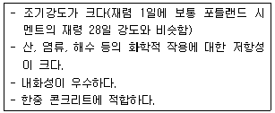
- 실리카 시멘트
- 알루미나 시멘트
- 포졸란 시멘트
- 플라이 애쉬 시멘트
(정답률: 64%)
43. 다음 중 아스팔트 품질의 양부를 판정하는데 필요없는 시험은?
- 침입도 시험
- 마모율 시험
- 신도 시험
- 연화점 시험
(정답률: 62%)
44. 암석의 종류 중 퇴적암이 아닌 것은?
- 사암
- 혈암
- 석회암
- 안산암
(정답률: 48%)
45. 고무혼입 아스팔트(rebberized asphalt)를 스트레이트 아스팔트와 비교할 때 다음 설명 중 옳지 않은 것은?
- 응집성 및 부착력이 크다.
- 마찰계수가 크다.
- 충격저항이 크다.
- 감온성이 크다.
(정답률: 71%)
46. 다음 합성수지 중 열가소성 수지는?
- 멜라민 수지
- 실리콘 수지
- 요소 수지
- 아크릴 수지
(정답률: 50%)
47. 콘크리트용 혼화제(混和劑)에 대한 일반적인 설명으로 틀린 것은?
- AE제에 의한 연행공기는 시멘트, 골재입자 주위에서 베어링(bearing)과 같은 작용을 함으로써 콘크리트의 워커빌리티를 개선하는 효과가 있다.
- 고성능 감수제는 그 사용방법에 따라 고강도 콘크리트용 감수제와 유동화제로 나누어지지만 기본적인 성능은 동일하다.
- 촉진제는 응결시간이 빠르고 조기강도를 증대 시키는 효과가 있기 때문에 여름철공사에 사용하면 유리하다.
- 지연제는 사일로, 대형구조물 및 수조 등과 같이 연속타설을 필요로 하는 콘크리트 구조에 작업이음이 발생등의 방지에 유효하다.
(정답률: 83%)
48. 굵은골재의 최대치수란 질량비로 몇 %이상 통과시키는 체중에서 최소 치수의 체눈을 공칭 치수로 나타낸 것인가?
- 80%
- 85%
- 90%
- 95%
(정답률: 83%)
49. 기상작용에 대한 골재의 저항성을 평가하기 위한 시험은?
- 밀도 및 흡수율 시험
- 안정성 시험
- 로스엔젤레스 마모시험
- 유해물 함량시험
(정답률: 74%)
50. 직경 20cm, 길이 5m의 강봉에 축방향으로 40ton의 인장력을 가하여 변형을 측정한 결과 직경이 0.1mm줄었고 길이가 10mm 늘어났을 때의 이 재료의 포아송수는 얼마인가?
- 1.0
- 4.0
- 5.0
- 10.0
(정답률: 75%)
51. KS F 2526에 규정되어 있는 콘크리트용 골재의 물리적 성질에 대한 설명으로 틀린 것은?
- 굵은 골재의 절대건조 밀도는 2.5g/cm3이상이어야 한다.
- 잔골재의 흡수율은 0.3%이하이어야 한다.
- 잔골재의 안정성은 15%이하이어야 한다.
- 굵은 골재의 마모율은 40%이하이어야 한다.
(정답률: 68%)
52. 다음 중 유동성을 증가시키는 혼화재료가 아닌 것은?
- 감수제
- 촉진제
- AE제
- 플라이애쉬
(정답률: 60%)
53. 콘크리트에서 섬유보강의 효과가 가장 적은 것은?
- 인장강도 증가
- 워커빌리티 증가
- 균열저항성 증가
- 내구성 증가
(정답률: 50%)
54. 시멘트의 강열감량(igniton loss)에 대한 설명으로 틀린 것은?
- 강열감량은 시멘트에 1000℃의 강한 열을 가했을 때의 시멘트 감량이다.
- 감열감량은 시멘트 중에 함유된 H2O와 CO2의 양이다.
- 강열감량은 클링커와 혼합하는 석고의 결정수량과 거의 같은 양이다.
- 시멘트가 풍화하면 감열감량이 적어지므로 풍화의 정도를 파악하는데 사용된다.
(정답률: 44%)
55. 잔골재의 밀도시험의 결과가 아래 표와 같을 때 이 잔골재의 표면건조 포화상태의 밀도는?
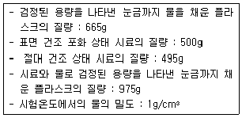
- 2.65g/cm3
- 2.63g/cm3
- 2.60g/cm3
- 2.57g/cm3
(정답률: 71%)
56. 포틀랜드시멘트 클링커 화합물에 대한 설명으로 옳은 것은?
- 포틀랜드시멘트 클링커는 단일조성이 아니라 알라이트(Alite), 베라이트(Belite), 석회(Ca0), 산화철(Fe203)이라 하는 4가지의 주요 화합물로 구성ㄷ된다.
- C3A는 수화속도가 매우 느리고 발열량이 적으며 수축도 작다.
- S3 및 C2S는 시멘트 강도의 대부분을 지배하는 것으로 그 합이 포틀랜드시멘트에서는 70~80%범위이다.
- 육각형 모양은 한 일라이트는 2CaOㆍSiO2(C2S)를 주성분으로 하며 다량의 Al2O3 및 Mg0등을 고용한 결정이다.
(정답률: 40%)
57. 목재의 강도에 대하여 바르게 설명한 것은?
- 일반적으로 휨 강도는 압축강도보다 작다.
- 일반적으로 섬유에 평행방향의 인장강도는 압축강도보다 크다.
- 일반적으로 섬유에 평행방향의 압축강도는 섬유에 직각방향의 압축강도보다 작다.
- 일반적으로 전단강도는 휨 강도보다 크다.
(정답률: 58%)
58. 일반적인 폭약의 취급법으로써 적절하지 않은 것은?
- 직사광선과 화기를 피하는 곳에 보관할 것
- 뇌관과 폭약은 다른 장소에 보관할 것
- 주기적으로 흔들어 주고 가능하면 저온(0℃이하)에서 보관할 것
- 온도 및 습도에 의한 변질에 주의할 것
(정답률: 86%)
59. 대폭파 또는 수중폭파에서 동시폭파를 실시하기 위하여 뇌관 대신에 사용하는 것은?
- 도화선
- 도폭선
- 전기뇌관
- 청장약
(정답률: 67%)
60. 실리카퓸에 대한 설명으로 잘못된 것은?
- 골재와 시멘트풀 간의 결합을 좋게하므로 고강도 콘크리트에 사용된다.
- 사용량이 증가할수록 소요 단위수량도 증가하므로 고성능 감수제의 사용이 필수적이다.
- 단위수량 증가, 건조수축의 증가 등의 단점이 있다.
- 규산백토, 규조토 등과 함께 천연 혼화재료로서 시멘트량의 1% 이하의 액상인 재료이다.
(정답률: 48%)
4과목: 토질 및 기초
61. 모래지반의 현장상태 습윤 단위 중량을 측정한 결과 1.8t/m3으로 얻어졌으며 동일한 모래를 채취하여 실내에서 가장 조밀한 상태의 간극비를 구한 결과 emin=0.456, 가장 느슨한 상태의 간극비를 구한 결과 emax=0.92를 얻었다. 현장상태의 상대밀도는 약 몇 %인가? (단, 모래의 비중 Gs=2.7이고, 현장상태의 함수비 w=10%이다.)
- 44%
- 57%
- 64%
- 80%
(정답률: 63%)
62. 굳은 점토지반에 앵커를 그라우팅하여 고정시켰다. 고정부의 길이가 5m, 직경 20cm, 시추공의 직경은 10cm이었다. 점토의 비배수전단강도(Cu)=1.0kg/cm2, ø=0℃이라고 할 때 앵커의 극한 지지력은? (단, 표면마찰계수는 0.6으로 가정한다.)
- 9.4ton
- 15.7ton
- 18.8ton
- 31.3ton
(정답률: 43%)
63. 두께 5m 되는 점토층 아래 위에 모래층이 있을 때 최종 1차 압밀침하량이 0.6m로 산정되었다. 이래의 압밀도(U)와 시간계수(Tv)의 관계 표를 이용하여 0.36m가 침하될 때 걸리는 총소요시간을 구하면? (단, 압밀계수 Cv=3.6×10-4cm2/sec이고, 1년은 365일)
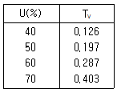
- 약 1.2년
- 약 1.6년
- 약 2.2년
- 약 3.6년
(정답률: 57%)
64. 2m×2m 정방형 기초가 1.5m 깊이에 있다. 이 흙의 단위중량 γ=1.7t/m3, 점착력 c=0이며, Nγ=19, Nq=22이다. Terzaghi의 공식을 이용하여 전허용하중(Qall)을 구한 값은? (단, 안전율 Fs=3으로 한다.)
- 27.3t
- 54.6t
- 81.9t
- 109.3t
(정답률: 49%)
65. 정규압밀점토의 압밀시험에서 하중강도를 0.4kg/cm2에서 0.8kg/cm2로 증가시킴에 따라 간극비가 0.83에서 0.65로 감소하였다. 압축지수는 얼마인가?
- 0.3
- 0.45
- 0.6
- 0.75
(정답률: 24%)
66. 아래 표의 설명과 같은 경우 강도정수 결정에 적합한 삼축 압축 시험의 종류는?
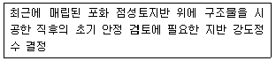
- 비압밀비배수 시험(UU)
- 압밀비배수 시험(CU)
- 압밀배수 시험(CD)
- 비압밀배수 시험(UD)
(정답률: 65%)
67. 도로의 평판재하 시험이 끝나는 조건에 대한 설명으로 옳지 않은 것은?
- 완전히 침하가 멈출 때
- 침하량이 15mm에 달할 때
- 하중 강도가 그 지반의 항복점을 넣을 때
- 하중 강도가 현장에서 예상되는 최대 접지 압력을 초과할 때
(정답률: 66%)
68. 그림과 같이 c=0인 모래로 이루어진 무한사면이 안정을 유지(안전율≥1)하기 위한 경사각 β의 크기로 옳은 것은?
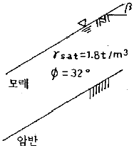
- β≤7.8°
- β≤15.5°
- β≤31.3°
- β≤35.6°
(정답률: 58%)
69. 단면적 20cm2, 길이 10cm의 시료를 15cm의 수두차로 정수위 특수시험을 한 결과 2분 동안에 150cm3의 물이 유출되었다. 이 흙의 Gs=2.67이고, 건조중량이 420g이었다. 공극을 통하여 침투하는 실제 침투유속 Vs는 약 얼마인가?
- 0.180cm/sec
- 0.296cm/sec
- 0.376cm/sec
- 0.434cm/sec
(정답률: 64%)
70. 다음은 전단시험을 한 응력경로이다. 어느 경우인가?
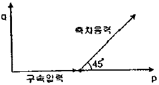
- 초기단계의 최대주응력과 최소주응력이 같은 상태에서 시행한 삼축압축시험의 전응력 경로이다.
- 초기단계의 최대주응력과 최소주응력이 같은 상태에서 시행한 일축압축시험의 정응력 경로이다.
- 초기단계의 최대주응력과 최소주응력이 같은 상태에서 Ko=0.5인 조건에서 시행한 삼축압축시험의 전응력 경로이다.
- 초기단계의 최대주응력과 최소주응력이 같은 상태에서 Ko=0.7인 조건에서 시행한 일축압축시험의 전응력 경로이다.
(정답률: 63%)
71. 그림의 유선망에 대한 설명 중 틀린 것은? (단, 흙의 투수계수는 2.5×10-3cm/sec)
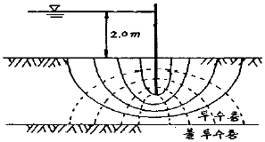
- 유선의 수=6
- 등수두선의 수=6
- 유로의 수=5
- 전침투유량 Q=0.278cm3/sec
(정답률: 71%)
72. sand drain 공법에서 sand pile을 정삼각형으로 배치할 대 모래기둥의 간격은? (단, 모래기둥의 간격은? (단, pile의 유효지름은 40cm이다.)
- 35cm
- 38cm
- 42cm
- 45cm
(정답률: 63%)
73. 그림과 같은 옹벽에 작용하는 주동토압의 합력은? (단, γsat=1.8t/m3, ø=30°, 벽마찰각 무시)
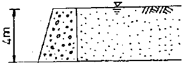
- 10.1 t/m
- 11.1 t/m
- 13.7 t/m
- 18.1 t/m
(정답률: 42%)
74. 어떤 흙의 체분석 시험결과가 #4체 통과율이 37.5%, #200체 통과율이 2.3%였으며, 균등계수는 7.9, 곡률계수는 1.4 이었다. 통일분류법에 따라 이 흙을 분류하면?
- GW
- GP
- SW
- SP
(정답률: 56%)
75. 어떤 흙시료의 직접전단시험 결과 수직응력이 12kg/cm2일 때 전단저항력은 10kg/cm2이었고, 수직응력이 24kg/cm2일 때 전단저항력은 18kg/cm2이었다. 이 때 점착력을 계산한 값은?
- 2.0kg/cm2
- 3.0kg/cm2
- 4.5kg/cm2
- 6.21kg/cm2
(정답률: 52%)
76. 토립자가 둥글고 입도분포가 나쁜 모래 지반에서 표준관입시험을 한 결과 N치는 10이었다. 이 모래의 내부 마찰각을 Dunham의 공식으로 구하면?
- 21°
- 26°
- 31°
- 36°
(정답률: 71%)
77. 흙의 단위중량이 1.5t/m3인 연약점토지반(ø=0)을 연직으로 4m까지 절취할 수 있다고 한다. 이 점토지반의 정착력은 얼마인가?
- 1.0 t/m2
- 1.5 t/m2
- 2.0 t/m2
- 3.0 t/m2
(정답률: 50%)
78. 그림과 같이 같은 두께의 3층으로 된 수평 모래층이 있을 때 모래층 전체의 연직방향 평균 투수계수는? (단, k1, k2, k3는 각 층의 투수계수임)
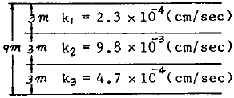
- 2.38×10-3cm/sec
- 4.56×10-4cm/sec
- 3.01×10-4cm/sec
- 3.36×10-5cm/sec
(정답률: 62%)
79. 흙의 다짐에 관한 설명 중 옳지 않은 것은?
- 일반적으로 흙의 건조밀도는 가하는 다짐 Energy가 클수록 크다.
- 모래질 흙은 진동 또는 진동을 동반하는 다짐 방법이 유효하다.
- 건조밀도-함수비 곡선에서 최적 함수비와 최대 건조 밀도를 구할 수 있다.
- 모래질을 많이 포함한 흙의 건조밀도-함수비 곡선의 경사는 완만하다.
(정답률: 72%)
80. 모래지반에 30cm×30cm의 재하판으로 재하실험을 한 결과 10t/m2의 극한 지지력을 얻었다. 4m×4m의 기초를 설치할 때 기대되는 극한지지력은?
- 10t/m2
- 100t/m2
- 133t/m2
- 154t/m2
(정답률: 73%)
수경률은 시멘트 원료의 조합비를 결정하는 중요한 요소 중 하나입니다. 수경률은 시멘트, 모래, 물의 비율을 나타내며, 일반적으로 1:2:3 또는 1:2.5:3.5의 비율이 사용됩니다.
수경률을 계산하는 공식은 다음과 같습니다.
수경률 = (시멘트의 중량 / 시멘트와 모래의 중량 합) x 100
즉, 시멘트의 중량을 시멘트와 모래의 중량 합으로 나눈 후 100을 곱합니다.
이 공식은 시멘트와 모래의 비율을 나타내는데, 물의 양은 이후에 조절하여 적절한 플라스틱도를 유지합니다.